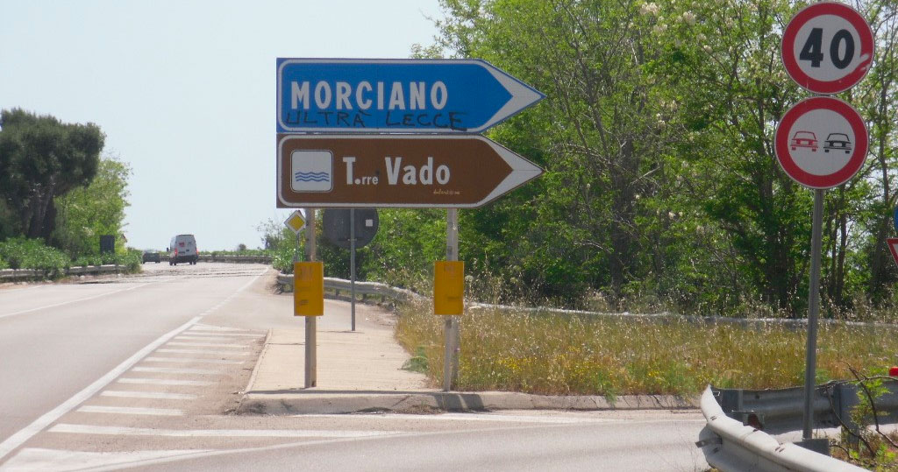
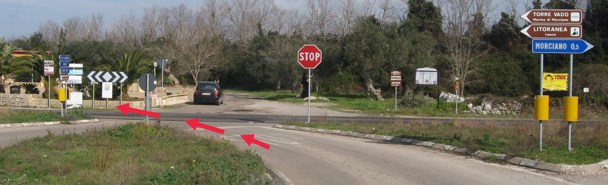
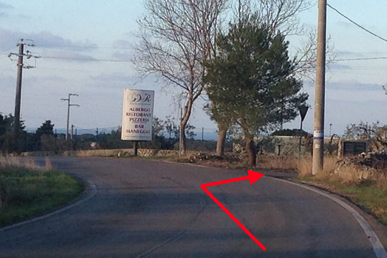
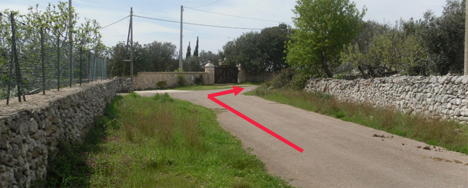
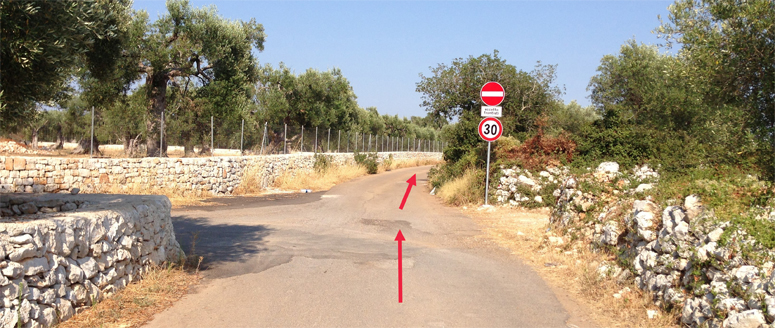
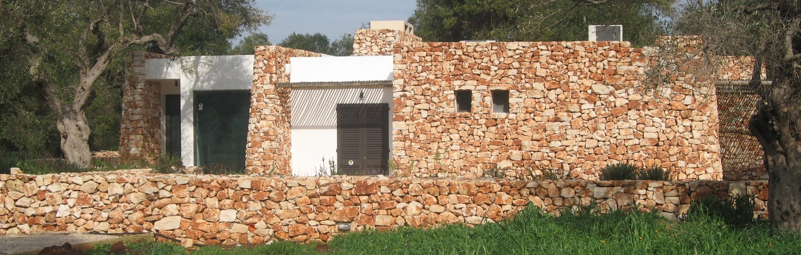
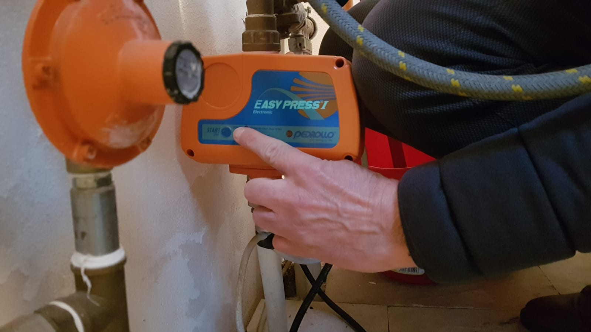
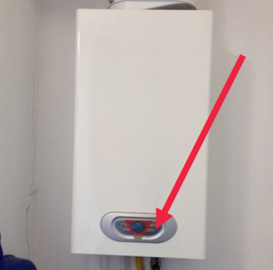
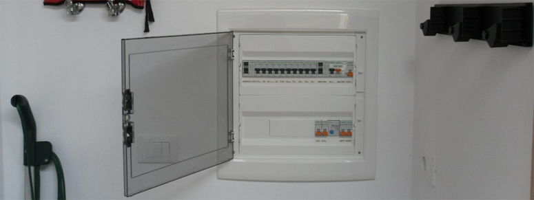
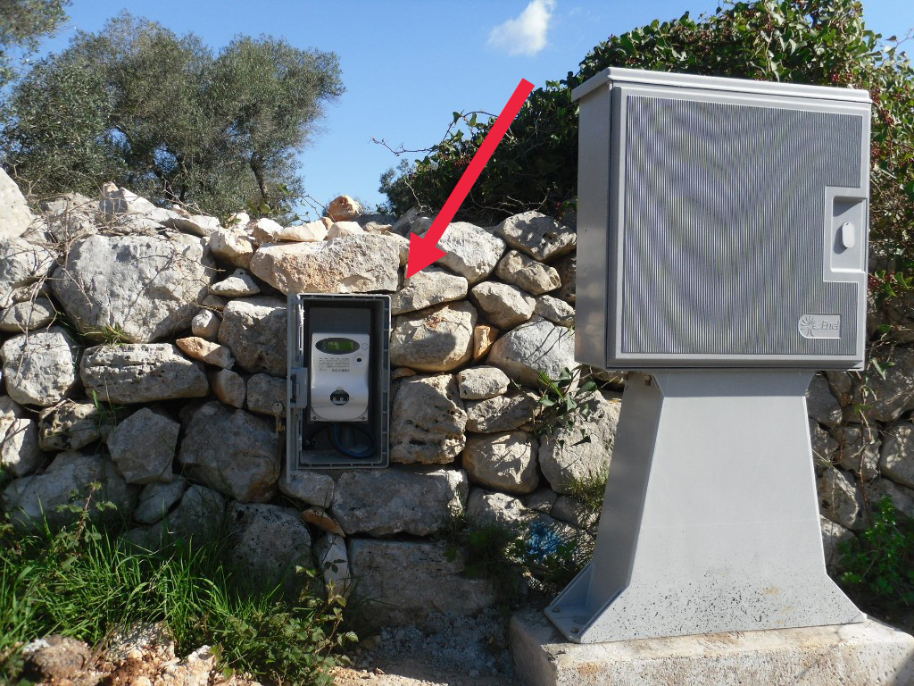

Salento · Puglia · Italia
D · S
Guida per gli Ospiti · Edizione 2026
Bosco
degli Ulivi
Morciano di Leuca · Sud Salento
Una nota da parte nostra
Benvenuti
a Bosco degli Ulivi
Grazie per aver scelto la nostra casa per la vostra vacanza nel Salento. Bosco degli Ulivi è nata dall'incontro fra un uliveto secolare e l'idea di una dimora contemporanea che parlasse questa stessa lingua: linee essenziali, materiali naturali, silenzio.
Abbiamo preparato questa guida per accompagnarvi nel soggiorno — dalle istruzioni pratiche per la casa ai nostri ristoranti preferiti, dalle spiagge che amiamo agli itinerari di un giorno per scoprire il Sud Salento più autentico.
Per qualunque cosa siamo a un messaggio di distanza. Vi auguriamo un soggiorno indimenticabile, lento come dev'essere.
Carlo · Designsuite
+39 335 6810 310 · carlo@designsuite.it
In questa guida
Tutto ciò che vi serve,
in un colpo d'occhio
A colpo d'occhio
Gli essenziali,
in una pagina
Wi-Fi
boscodegliulivipassword della rete · tutto minuscolo
Check-in / Check-out
16:00–19:00 · entro le 10:00orari da confermare con il proprietario
Indirizzo
Via Murge, sncMorciano di Leuca (LE) · 73040
Host · 24 ore su 24
+39 335 6810 310WhatsApp preferito · italiano e inglese
✆
Scriveteci su WhatsApp
Rispondiamo entro pochi minuti, italiano e inglese
Check-in
Normalmente vi accoglierà una persona di fiducia per consegnarvi le chiavi e mostrarvi la villa. In casi particolari è possibile un self check-in: troverete le chiavi in una cassetta a combinazione vicino all'ingresso. Per il check-out, se dovete partire molto presto, possiamo organizzare la consegna delle chiavi la sera prima.
Cinque regole semplici
La villa è in mezzo a un uliveto: ha la sua quiete e i suoi piccoli ritmi. Bastano cinque attenzioni per rispettarli e starci davvero bene.
INon si fuma in casa. All'esterno siete liberi di fumare, vi chiediamo solo di spegnere bene mozziconi e sigari e di non lasciare candele o fuochi accesi quando uscite o andate a dormire.
IIL'acqua è preziosa. Bosco degli Ulivi non è servita dall'acquedotto: l'acqua arriva con autobotte. Chiudete bene i rubinetti, usate la doccia esterna in piscina brevemente, segnalateci subito qualunque perdita.
IIIRaccolta differenziata in cinque flussi: vetro, carta, plastica e metallo, organico, indifferenziato. I bidoni sono accanto all'ingresso della proprietà. Una raccolta differenziata fatta male non viene ritirata e il Comune applica una multa di 50 € al locatario.
IVPiscina con un occhio in più. I bambini in piscina sono sempre accompagnati da un adulto. Non si tuffa, non si corre lungo i bordi, niente bicchieri di vetro a bordo vasca. Prima di entrare in acqua, una passata veloce alla doccia esterna.
VTrattate la casa come fosse vostra. Se qualcosa si rompe, ditecelo subito: ci occupiamo di tutto insieme, senza drammi. Per i danni più importanti useremo, se necessario, la cauzione lasciata all'arrivo.
Animali
Bosco degli Ulivi è una villa pensata per il riposo: la quiete del luogo è uno dei suoi tratti. Non si accettano animali, salvo accordi specifici concordati prima della prenotazione.
Cosa trovate in villa
Una rassegna veloce dei comfort della casa, così potete preparare la valigia senza pensieri. Tutto è già pronto al vostro arrivo.
Camere e bagni
- 3 camere da letto (2 matrimoniali, 1 doppia flessibile)
- Fino a 6 ospiti
- 2 bagni con doccia (1 en-suite)
- Lenzuola e asciugamani bagno e piscina inclusi
- Asciugacapelli e set di cortesia in bagno
Cucina
- Cucina a vista perfettamente attrezzata
- Lavastoviglie e forno a microonde
- Macchina caffè Nespresso
- Bollitore e tostapane
- Stoviglie, posate e pentole per 6 persone
TV e connettività
- Wi-Fi ad alta velocità
- TV con Apple TV per app e streaming
Outdoor
- Piscina 12 × 4 m con solarium
- Cucina esterna con lavello e piano di lavoro
- Tavolo in pietra per cene all'aperto
- Zona living esterna
- Barbecue
- Doccia esterna
Servizi e impianti
- Aria condizionata e riscaldamento
- Lavanderia con lavatrice
- Ferro da stiro e asse
- Parcheggio privato all'interno della proprietà
Sicurezza
- Torcia sulle mensole della cucina
- Cassetta del primo soccorso in cucina
- Estintore vicino al camino
02
Sezione Due
Come Arrivare
La soluzione più semplice è Google Maps: la villa è registrata, basta cercare "Bosco degli Ulivi" e seguire le indicazioni. Per le ultime tappe, le foto qui di seguito vi aiutano a riconoscere il percorso.
In auto, dagli aeroporti
La via più semplice
Aprite Google Maps
e cercate Bosco degli Ulivi
La villa è registrata. Da Brindisi il viaggio dura circa 1,5 ore, da Bari circa 2,5 ore.
→ Apri il percorso in Google Maps
Coordinate
39°50'38" N
18°17'12" E
Importante
In autostrada è obbligatorio viaggiare con i
fari accesi, anche di giorno. Sulla SS274 in alta stagione il traffico aumenta nel tardo pomeriggio: se atterrate dopo le 17:00, mettete in conto qualche minuto in più.
Da Brindisi (≈ 1h 30')
SS16 verso Lecce, poi Tangenziale Ovest SS694 uscita Gallipoli, quindi SS101 → SS274 in direzione Santa Maria di Leuca, uscita Morciano / Torre Vado.
Da Bari (≈ 2h 40')
SS16 (E55) verso Brindisi e Lecce, poi Tangenziale Ovest SS694 e da lì stesso percorso da Brindisi. Stessa uscita finale: Morciano / Torre Vado.
Le ultime tappe
Da quando uscite dalla SS274, queste sono le immagini di riferimento per riconoscere il percorso. Google Maps vi guida per filo e per segno, ma se la connessione fa i capricci, queste foto bastano da sole.

Uscita Morciano / T. Vadouscire dalla SS274 e svoltare a sinistra sulla SP190 verso Torre Vado

Bivio con Stopseguire le frecce — direzione Morciano 0,5 km

Lungo la stradapasserete accanto a un piccolo trullo

Strada fra i muretti a seccodopo 900 m girare a destra in una strada stretta

Continuare drittoper altri 500 m, fino al cancellino in ferro

Bosco degli Uliviil muretto in pietra che riconoscerete dalle foto
Parcheggio
All'interno della proprietà trovate un parcheggio privato riservato agli ospiti. Nessuna prenotazione necessaria: c'è sempre spazio per le auto del soggiorno.
Guidare in Puglia
Il primo impatto può sembrare un po' caotico, ma ci si abitua in fretta. Il segreto è adattarsi: non cambierete il modo di guidare dei pugliesi in una settimana, ma vi accorgerete che, dopo lo shock iniziale, il sistema funziona.
In autostrada
Il limite è 130 km/h se non diversamente indicato. I fari restano accesi per tutto il tragitto, è obbligatorio per legge. Quasi tutte le autostrade sono a pagamento: ai caselli, in alta stagione si formano code lunghe. Se avete una carta Visa o Mastercard, usate le casse automatiche segnalate dalla parola "card": si paga in pochi secondi.
Stazioni di servizio
La maggior parte ha due pompe affiancate: fai da te (self) e servito. Il prezzo del servito è leggermente più alto. A voi scegliere se vale la differenza per non sentire l'odore di gasolio sulle mani.
In paese
Pensate alle strade del centro come a un'area pedonale: scooter, auto e persone escono da ogni angolo, apparentemente senza guardare, dando per scontato che voi farete loro spazio. Funziona — basta usare gli specchietti retrovisori molto più del solito.
Parcheggi e strisce
Strisce blu · Parcheggio a pagamento. Vicino c'è sempre un parcometro con orari e tariffe. Inserite le monete necessarie e mettete il biglietto sul cruscotto, ben visibile. Se non trovate il parcometro, il biglietto si compra in tabaccheria.
Strisce bianche · Parcheggio gratuito, ma in alcuni casi solo in determinate ore. Leggete sempre i cartelli vicini.
Strisce gialle · Vietato parcheggiare. Riservate a residenti, uffici pubblici, disabili.
Parcheggiatori improvvisati
In molti centri storici vi avvicineranno persone non ufficiali che vi indicano un posto libero e vi aiutano a manovrare. Si aspettano una mancia di 50 cent – 1 €. Comunque, controllate sempre i cartelli stradali: il parcheggiatore non vi salva da una multa.
Multe
Se prendete una multa, troverete sull'avviso le indicazioni per il pagamento. Il testo è solitamente solo in italiano: in caso di dubbi, scriveteci.
03
Sezione Tre
La Casa
Una conversazione discreta con la villa — cosa aspettarsi da ogni stanza, come funzionano gli apparecchi, i piccoli dettagli che fanno sentire a casa fin dalla prima sera.
Vivere la villa
Bosco degli Ulivi è uliveto in attività tanto quanto è casa di vacanza, e chiede in cambio della calma che offre una piccola attenzione. Le note che seguono coprono gli essenziali — elettrodomestici, acqua, elettricità — perché nulla si frapponga fra voi e un lungo pomeriggio in piscina.
Camere da letto
Tre camere: due matrimoniali, una doppia flessibile (può essere preparata come matrimoniale o come due singole, fateci sapere in anticipo). All'arrivo trovate i letti già rifatti e gli asciugamani bagno e piscina per tutto il soggiorno.
Bagni
Due bagni con doccia, uno en-suite e uno nella zona giorno. In ciascuno trovate prodotti di cortesia e un asciugacapelli. Vi chiediamo di gettare nel WC solo carta igienica in piccole quantità: tutto il resto va nel cestino.
Aria condizionata
Le notti in Salento sono fresche, e la casa mantiene bene la sua temperatura: l'aria condizionata serve solo nelle settimane più calde. Impostatela fra 23 e 26 °C per dormire e spegnetela quando uscite. Evitate di passare di continuo da ambienti molto freschi all'aperto caldo.
Mobili e arredi
I tessuti d'arredo sono delicati. Vi chiediamo di non sedervi sui divani e sulle poltrone con il costume bagnato o vestiti umidi di mare e piscina, e di non usare creme abbronzanti sui tessuti — alcune (in particolare Riemann P20) lasciano macchie indelebili.
Mobili esterni e ombrelloni
La sera, o quando uscite per un'intera giornata, vi chiediamo di portare dentro i cuscini delle sedute esterne in caso di pioggia. Gli ombrelloni vanno sempre chiusi quando uscite o quando si alza il vento: una raffica improvvisa può rovinarli.
Camino
Il camino è un piacere d'inverno e nelle mezze stagioni. Non lasciatelo mai incustodito e mai uscite di casa con il fuoco acceso. Accanto al camino trovate un piccolo set per la pulizia e l'estintore.
Trattate la casa come fosse vostra — è il modo più semplice per starci bene.
Impianti — acqua, caldaia, elettricità
Tutti gli impianti sono già attivi al vostro arrivo e non richiedono nulla da parte vostra. Queste pagine vi servono solo nel caso, raro, in cui qualcosa smetta di funzionare.

Impianto idrico
Se manca acqua ai rubinetti, premete il pulsante blu START sulla pompa arancione Pedrollo Easy Press in lavanderia, accanto alla cucina esterna. La pompa rimette in pressione l'impianto in pochi secondi.

Caldaia · acqua calda
La caldaia è in lavanderia ed è già accesa. Se l'acqua calda manca, tenete premuto il pulsante di reset al centro della caldaia per 3 secondi.

Quadro elettrico
In caso di blackout, spegnete prima gli apparecchi più potenti. Poi controllate il quadro elettrico nell'armadietto della cucina, di fronte al piano cottura: tutti gli interruttori devono essere alzati.

Contatore ENEL
Se ancora niente, il contatore principale è nel muretto sulla strada principale, ≈ 100 m a destra del nostro ingresso. Con la chiavetta più piccola del mazzo, aprite la cassetta e verificate che l'interruttore sia alzato.
Acqua dai rubinetti
La villa non è collegata all'acquedotto: l'acqua arriva con autobotte e viene conservata in cisterna. È sicura per cucinare, lavarsi e fare la doccia, ma non è potabile. Per bere, trovate al vostro arrivo dell'acqua minerale; altre bottiglie si comprano facilmente al supermercato del paese.
In dotazione
Una piccola torcia vive sulle
mensole della cucina, pronta in caso di blackout serale.
Piscina e giardino
La piscina è uno dei cuori della casa: 12 metri per 4, viene controllata e pulita tre volte la settimana. Qualche semplice attenzione per godersela senza pensieri.
Prima di entrare in acqua
Una passata veloce alla doccia esterna: tiene la piscina pulita e dura più a lungo l'effetto del trattamento dell'acqua.
Non si tuffa
Niente tuffi, né dal bordo né dalle scale, e niente corse lungo il perimetro: il bordo può essere scivoloso.
Niente vetro
Bicchieri e bottiglie di vetro sono vietati nell'area piscina. Per gli aperitivi sul lettino vi mettiamo a disposizione bicchieri in plastica resistente.
Creme solari
Evitate di sdraiarvi su lettini e sedute con autoabbronzante appena applicato: macchia in modo indelebile.
Bambini
I bambini in piscina sono sempre accompagnati da un adulto, anche quando indossano braccioli o ciambelle: nessun aiuto al galleggiamento sostituisce la sorveglianza.
Nuoto la sera
Nuotare di notte non è consigliato. Se proprio decidete di farlo, accendete le luci della piscina e non fatelo mai da soli.
Il giardino
L'impianto di irrigazione si attiva automaticamente — di solito al primo mattino o alla sera, per non sprecare acqua — ed è controllato dal nostro custode. Non c'è nulla che dobbiate fare.
Insetti e altri animali
La Puglia è una terra calda e in campagna gli insetti sono molti. Non ci sono animali pericolosi, ma qualche piccola accortezza migliora la quiete:
- Non lasciate porte e finestre aperte la sera con le luci accese
- Usate i diffusori antizanzare elettrici che trovate in casa
- Se cenate fuori in tarda serata, coprite braccia e gambe o usate un repellente
Buono a sapersi
Nei mesi caldi capita di vedere, di mattina presto o al tramonto, qualche lucertola sul muretto e qualche gheco appoggiato all'esterno della finestra. Sono innocui e fanno parte del fascino della Puglia rurale.
Elettrodomestici e TV
Tutti gli elettrodomestici sono di classe energetica A e di uso intuitivo. Una sintesi qui sotto.
Lavastoviglie
Avviatela quando è piena. Mettete dentro stoviglie già sciacquate, senza residui di cibo. Per usarla: selezionate il programma, inserite la pastiglia nell'alloggiamento, premete "START", chiudete lo sportello.
Lavatrice
Stesso principio: caricate, selezionate il programma, premete "START". La lavanderia è dotata di detergente, ma se preferite portare il vostro, nessun problema.
Macchina del caffè
Nespresso con capsule. All'arrivo vi lasciamo una piccola scorta di cortesia; capsule extra si trovano facilmente al supermercato in paese.
Forno a microonde · bollitore · tostapane
Tutto in cucina, pronto all'uso. Niente di particolare da segnalare.
TV con Apple TV
In salotto trovate una TV con Apple TV collegata. Da Apple TV potete accedere comodamente a tutte le principali app di streaming — Netflix, Prime Video, Disney+, YouTube, RaiPlay e così via — accedendo con il vostro account personale. Al check-out vi chiediamo di disconnettere i vostri account.
Cucina esterna
Una zona attrezzata per cucinare e cenare all'aperto: lavello, piano di lavoro e barbecue, perfetta per le cene di pesce o le grigliate lunghe in compagnia, con il tavolo in pietra a portata di mano.
Ferro da stiro
In lavanderia, insieme all'asse e a una piccola scorta di grucce.
Tutto rotto, tutto risolto
Se qualcosa smette di funzionare, scriveteci subito su WhatsApp: ci muoviamo entro la giornata. Preferiamo sapere di un guasto in tempo reale, piuttosto che ricostruirlo a posteriori.
Raccolta differenziata
A Morciano di Leuca la raccolta è puntuale e separata in cinque flussi. Una raccolta differenziata fatta correttamente è una delle attenzioni più semplici e più utili.
I cinque flussi
Vetro
Bottiglie e vasetti di vetro, sciacquati e senza tappo. Tappi metallici nella plastica/metallo.
Carta
Carta, cartone, riviste, scatole. Niente carta sporca di cibo o oleata.
Plastica e metallo
Bottiglie, contenitori, lattine, tappi. Vanno schiacciati per ridurne il volume.
Organico
Scarti di cibo, gusci d'uovo, fondi di caffè. Nel sacchetto compostabile dedicato.
Indifferenziato
Tutto ciò che non rientra negli altri quattro. Dovrebbe restare poco.
Dove
I bidoni sono all'esterno della proprietà, accanto all'ingresso, sul lato sinistro del vialetto.
Calendario di raccolta
Il calendario completo è affisso in cucina. Lo aggiorniamo a ogni inizio stagione perché può cambiare. In genere: organico tre volte a settimana, indifferenziato e differenziata in giorni alterni. Si esce con i bidoni la sera prima, non oltre le 22:00.
Importante
Se la raccolta non è fatta correttamente, gli operatori non ritirano i bidoni e il Comune applica una
multa di 50 € al locatario per ogni episodio. È la regola che ci viene chiesto di rispettare con più attenzione.
04
Sezione Quattro
Servizi
Le piccole attenzioni che rendono il soggiorno comodo — pulizie e cambi biancheria già inclusi, qualche servizio extra che potete richiedere, e poche righe per chiarire come gestiamo eventuali danni.
Pulizie e biancheria
A Bosco degli Ulivi le pulizie settimanali e il cambio biancheria sono inclusi. Vi chiediamo solo di trovare la casa in ordine al cambio, e di aiutarci con qualche piccolo gesto al check-out.
Cosa è incluso
Pulizia settimanale con cambio biancheria, sia in soggiorni di una settimana sia per i ricambi all'interno di soggiorni più lunghi.
Pulizia degli spazi esterni a giorni alterni (zona piscina, terrazze, cucina esterna).
Pulizia finale dopo il vostro check-out, già compresa nella tariffa.
Cambio della biancheria
All'arrivo trovate i letti rifatti e gli asciugamani da bagno e da piscina per tutto il soggiorno. Per chi resta due settimane o più, la biancheria viene cambiata all'inizio di ogni settimana, di norma nello stesso giorno del check-in.
Se le camere sono occupate al momento del cambio, gli operatori lasciano la biancheria pulita davanti a ciascuna stanza.
Servizi extra a richiesta
Pulizia giornaliera · su richiesta, da concordare prima dell'arrivo.
Pulizia extra durante il soggiorno · 15 €/ora.
Cambio biancheria letto fuori programma · 15 € a set.
Cambio asciugamani bagno e piscina fuori programma · 15 € a set.
Cuoco privato · su richiesta, per cene private in villa o esperienze gastronomiche. Quotazione personalizzata.
Un piccolo favore
Al check-out vi chiediamo gentilmente di avviare un ciclo di lavastoviglie con piatti, posate e pentole sporche, e di lasciare la casa in ordine. Sono attenzioni minime che fanno una grande differenza per chi prepara la villa per gli ospiti successivi.
Lavanderia, danni, check-out
Lavanderia
In villa trovate una lavatrice: se preferite viaggiare leggeri, potete fare i bucati di cui avete bisogno comodamente in casa. In lavanderia c'è anche un piccolo stendino; in alternativa, le sedie del giardino in pieno sole sono ottime alleate.
Prodotti da bagno
In ciascun bagno trovate prodotti di cortesia e un asciugacapelli. Se usate prodotti di una marca specifica ma preferite viaggiare leggeri, i principali brand si trovano facilmente nei supermercati e nelle farmacie locali.
Creme solari
Una piccola raccomandazione: alcuni filtri solari a base chimica (di solito i "long-lasting") possono macchiare in modo definitivo tessuti di lenzuola e arredi. In particolare vi chiediamo di non usare la Riemann P20 durante il soggiorno.
Danni
I piccoli incidenti capitano: un piatto rotto, un calice scheggiato. Per favore avvisateci appena succede. Se l'entità del danno è contenuta, vi chiediamo di rimborsarlo prima della partenza; per cifre maggiori useremo la cauzione lasciata all'arrivo.
Per noi è importante che le cose si risolvano con trasparenza e senza tensioni: vale di gran lunga di più sapere subito di un problema che scoprirlo dopo.
Check-out
L'orario di check-out è solitamente entro le 10:00 del giorno di partenza, ma può essere personalizzato. Di norma il proprietario o il custode è presente per ritirare le chiavi e darvi le ultime informazioni. Se dovete partire molto presto, possiamo organizzare la consegna delle chiavi la sera prima.
Bagaglio smarrito
Se il vostro bagaglio non arriva con voi all'aeroporto, recatevi subito al banco "Lost & Found": vi faranno compilare un modulo con i dati del volo e una preferenza fra ritiro autonomo o consegna in villa. Il ritiro autonomo è spesso più rapido. Se serve aiuto a coordinare la consegna a Bosco degli Ulivi, scriveteci.
05
Sezione Cinque
Esplorare
il Salento
La penisola salentina è un mosaico di borghi barocchi, spiagge dorate, mercati di paese e silenzi antichi. Qui trovate i luoghi che amiamo di più, e tre itinerari di un giorno per gli ospiti pigri.
Borghi e città
Da Bosco degli Ulivi tutto è a portata d'auto: nel raggio di un'ora si attraversano i borghi più belli della penisola. Qui i nostri preferiti, in ordine di distanza.
Santa Maria di Leuca
15 min · costa
La punta estrema d'Italia, dove Adriatico e Ionio si incontrano. Belle ville liberty sul lungomare e gite in barca dalle grotte. Imperdibile al tramonto.
Uno dei "Borghi più belli d'Italia": centro storico in pietra bianca, atmosfera lenta. Imperdibili i Frantoi Ipogei: quattro frantoi sotterranei scavati nella roccia (Scupola, Cicca, Perrone, Francescani Neri) lungo la "Via dei Frantoi Ipogei". Una delle visite più suggestive del Sud Salento.
Informazioni · IAT Specchia, Piazza del Popolo 8 · tel. 0833 536293
Tricase
30 min · entroterra
Centro raffinato e poco turistico. Da non perdere la Quercia Vallonea, l'albero "dei cento cavalieri" — uno dei più antichi d'Italia, sulla strada per Tricase Porto.
Città vecchia su un isolotto cinto da mura quattrocentesche, collegata alla terraferma da un ponte. Vicoli stretti, mercato del pesce all'alba, lungomare al tramonto.
Castello aragonese, centro storico bianco, cattedrale con il pavimento musivo dell'albero della vita (1163) e le ossa dei Martiri uccisi dai turchi nel 1480.
Galatina
50 min · entroterra
Barocco minore di grande grazia, ottime cantine nei dintorni. Patria del pasticciotto: a Galatina è stato inventato.
Il capolavoro barocco del Salento, in pietra leccese color crema. Centro storico pedonale, rovine romane, aperitivi all'aperto. Una giornata intera, almeno.
Altri luoghi che vale la pena
Cuore commerciale e gastronomico del Salento: belle architetture, boutique italiane, gastronomie specializzate. Tappa fissa di chi cerca scarpe e cibo.
Corigliano d'Otranto
55 min · borgo
Nel cuore della Grecia Salentina, dove si parla ancora il griko. Il "Giardino di Sophia" organizza visite filosofiche nel castello (anche in inglese su richiesta).
Anche questo è uno dei nove paesi della Grecia Salentina. Ogni agosto vi si tiene La Notte della Taranta, il più grande festival di pizzica e musica popolare del Mediterraneo.
Grotta Zinzulusa
45 min · grotta marina
Spettacolare grotta carsica di 150 m sul mare cobalto, vicino Castro. Stalattiti, stalagmiti, leggende. Visite guidate brevi (tel. 0836 943812).
Capitale del Primitivo: città gradevole e patria di una delle più importanti DOC pugliesi. Le cantine si visitano su appuntamento.
In Basilicata, ma a due ore e mezza. I Sassi patrimonio UNESCO, e nei dintorni la Cripta del Peccato Originale (su prenotazione, tel. 320 5350910). Una giornata intera, meglio due.
Spiagge e lidi consigliati
Bosco degli Ulivi è a pochi minuti dalle spiagge più belle del Sud Salento. Da Pescoluse a Riva di Ugento, sulla costa ionica, c'è un nastro quasi ininterrotto di sabbia dorata. Sull'Adriatico, a est, il paesaggio è più vario: scogliere, calette, grotte.
★
I lidi contrassegnati sono i nostri preferiti, quelli che consigliamo per primi.
I nostri preferiti
Lido Marinelli · San Gregorio di Patù
10 min · costa ionica
Lido di stile su un tratto roccioso vicinissimo a Santa Maria di Leuca. Bar e ristorante, ideale per il primo giorno mentre si aspetta il check-in.
Balelido · Torre Mozza, Ugento
25 min · costa ionica
Uno degli stabilimenti più esclusivi del litorale, sabbia bianca e servizi completi.
Via Isole Egadi 6, Torre Mozza · tel. 0833 932405 ·
balelido.it
Lido Pineta · Fontanelle, Ugento
30 min · costa ionica
Lido raffinato con un'ampia offerta di servizi, ristorante, pineta retrostante.
Località Fontanelle, SP91, Ugento · tel. 334 3130040 ·
lidopineta.it
Lido Venere · Pescoluse
15 min · costa ionica
Sabbia bianca e acque trasparenti delle "Maldive del Salento". Bar, gelateria e ristorante self-service con piatti salentini e pesce fresco.
Corso Italia 3, Pescoluse-Posto Vecchio, Salve · tel. 320 6563779 ·
lidovenere.com
Lido Ficò · Marina di Marittima
45 min · costa adriatica
Sul versante adriatico, in una caletta di scogliera bassa con passerelle e solarium in legno. Ristorante mediterraneo a pranzo e area wellness.
Via Litoranea 115, Marina di Marittima (Diso) · tel. 0833 1976078 ·
lidofico.it
Altri lidi e spiagge
Lido Gold · Salve
15 min · ionica
Sabbia bianca, ristorante intimo con cucina di mare contemporanea.
Località Colleoni-Torre Pali, Salve · tel. 338 4299617 ·
lidogold.it
Lido Relax Leuca
15 min · ionica
Lido esclusivo su una scogliera, con servizi completi.
SP214 46, Santa Maria di Leuca · tel. 392 4869105 ·
relaxleuca.it
Lido Pizzo · Taviano
35 min · ionica
A 5 km a sud di Gallipoli, costa litoranea. Servizi completi, bella spiaggia di sabbia.
SS Litoranea Gallipoli-Leuca · tel. 0833 276978
Lido Sant'Anna · Marina di Ugento
35 min · ionica
Lido familiare con kids club, piscina e ristorante. Ottimo per chi viaggia con bambini.
Marina di Ugento · tel. 0833 202551
Lido Cocoloco · Torre San Giovanni, Ugento
40 min · ionica
Spiaggia lunga di sabbia, acque belle, musica e DJ.
Punta della Suina · Gallipoli
40 min · ionica
Due baie di sabbia, acque cobalto, DJ set: il lido degli aperitivi al tramonto. Anche per pranzo.
Lido Hotel La Roccia · Marina di Castro
45 min · adriatica
Tratto roccioso bellissimo, acque trasparenti, ristorante.
Via Litoranea per Tricase, Marina di Castro · tel. 0836 979013
La Castellana · Otranto
1 h · adriatica
In Via Porto Craulo, di fronte all'Hotel La Plancia. Cala protetta, perfetta con i bambini.
Via Porto Craulo, Otranto · tel. 328 9558929
Buono a sapersi
Nei lidi più richiesti, ad agosto, è caldamente consigliata la prenotazione (lettini e ombrellone). Prezzi indicativi: 15–45 € al giorno per due lettini e un ombrellone.
Mercati di paese e botteghe
Andare al mercato è uno dei riti più piacevoli di una vacanza qui: frutta e verdura del territorio, formaggi appena tagliati, pesce ancora vivo. Ecco il calendario settimanale e qualche bottega che vale la deviazione.
Mercati settimanali
Lunedì · Lecce (stadio di Via del Mare), Alessano
Martedì · Tricase, Piazza del Mercato
Mercoledì · Gallipoli (Via Alfieri), Otranto (Via Calamuri)
Giovedì · Galatina (Via Genova), Castrignano del Capo (Piazza San Michele)
Venerdì · Specchia, Via XXV Aprile
Sabato · Maglie (Piazza M. Immacolata), Ugento (Piazza Italia)
Domenica · Marina di Leuca, Corso Cristoforo Colombo (luglio–settembre)
Mercatini dell'antiquariato
Sempre di domenica, di solito dalle 10 alle 20: Vernole (1ª domenica del mese), Tricase (1ª domenica), Gallipoli (2ª domenica), Lecce (ultima domenica del mese tutto l'anno, in Via XX Settembre).
Mercati del pesce
I porti di Gallipoli e Otranto hanno mercati del pesce dal mattino presto fino a mezzogiorno. A Marina di Leuca, alzandosi all'alba, si compra direttamente dai pescatori. Nei giorni di mare grosso, il pescato è scarso o assente.
Botteghe e specialità
Pasticceria Ascalone · Galatina, Via Vittorio Emanuele 17. Dove è stato inventato il pasticciotto. Da provare almeno una volta.
Pasticceria Natale · Lecce, Via Trinchese 7. Gelato e cotognata leccese.
Caseificio del Capo · Santa Maria di Leuca, Via Doppia Croce. Formaggi locali, mozzarella del giorno.
Vineria Renna · Santa Maria di Leuca, Via Tommaso Fuortes 21. Vini del territorio.
Il Pasticciotto · Morciano di Leuca, Via San Martino 82. Il pasticciotto più buono nei nostri dintorni.
L'Orecchietta · Morciano di Leuca, Corso Italia 169. Pasta fresca fatta a mano.
Cartapesta a Lecce
Il Salento è celebre per l'arte della cartapesta. A Lecce decine di botteghe nel centro storico, una su tutte: Bottega della Cartapesta, Via degli Acaja, a un passo da Piazza Sant'Oronzo. Vale la visita anche il piccolo Museo della Cartapesta, dentro il Castello di Carlo V.
Tre giornate, già pronte
Quando non avete voglia di pianificare, prendete una di queste. Sono tre giornate provate da noi: una di mare, una di barocco, una lenta.
Itinerario uno
Una giornata di mare
- 09:30Partenza verso Pescoluse, "le Maldive del Salento". Sabbia bianca, acqua bassa.
- 13:00Pranzo al Lido Venere: piatti salentini e pesce direttamente sulla spiaggia.
- 15:30Riposo in spiaggia, lunga passeggiata sul bagnasciuga.
- 18:00Aperitivo al Lido Marinelli, dove finisce l'Italia.
- 20:30Cena da Farnari a Gemini: cucina locale fatta bene.
Itinerario due
Una giornata di barocco
- 09:00Partenza per Lecce. Parcheggio fuori dalle mura, si entra a piedi.
- 10:00Centro storico: Piazza Sant'Oronzo, Anfiteatro romano, Basilica di Santa Croce.
- 13:00Pranzo da Pescheria con Cottura: scegliete il pesce, vi dicono come cuocerlo.
- 15:00Museo della Cartapesta dentro il Castello di Carlo V.
- 17:00Gelato da Pasticceria Natale in Via Trinchese.
- 19:30Aperitivo al 300mila Lounge Bar a Piazza Mazzini.
- 21:00Cena da Trattoria Le Zie: cucina pugliese vera, in piena Lecce.
Itinerario tre
Una giornata lenta nell'entroterra
- 10:00Specchia: passeggiata e visita ai Frantoi Ipogei (info Pro Loco, 0833 536293).
- 12:00Tricase: la Quercia Vallonea, l'albero "dei cento cavalieri".
- 13:30Pranzo a Sante le Muse a Salve: cucineria agrituristica, prodotti dell'orto.
- 16:00Corigliano d'Otranto: visita al castello e dintorni.
- 18:00Galatina: aperitivo e pasticciotto da Ascalone, dove è nato.
- 21:00Cena alla Farmacia dei Sani a Ruffano: cucina pugliese ai suoi livelli migliori.
Attività e sport
Per gli ospiti che amano muoversi: dalla barca al kitesurf, dalla bici alle terme. Le opzioni nel raggio di un'ora dalla villa sono molte.
Barca
Colaci Nautica · Santa Maria di Leuca. Gite ed escursioni lungo la costa, noleggio con o senza skipper. Tel. 0833 758936.
Salento in Barca · Gallipoli. Partenze dal lungomare Marconi. Tel. 347 5710572.
Armatori Salentini · Marina di Leuca. Charter e gite. Tel. 0833 750208.
Kitesurf e vela
Smaré Sailing School · Santa Maria di Leuca. Tel. 0833 758110.
Local Salento Kitesurf · Torre San Giovanni. Tel. 328 4260226.
Bici
Salento Bici Tour · Itinerari per coppie, famiglie, piccoli gruppi. Tel. 346 0862717.
Equitazione
Complesso delle Rose · Torre Vado. Tel. 0833 1826288.
Gli Amici del Murgese · Alessano. Tel. 0833 781791.
Centro Ippico Itri · Gallipoli. Passeggiate a cavallo di due ore sulla spiaggia fra Punta della Suina e Lido Pizzo (≈45 € a persona). Tel. 340 4081000.
Tennis e golf
Circolo Tennis degli Ulivi · Tuglie. Tel. 347 6110339.
Circolo Tennis Maglie · Tel. 0836 427474.
Acaya Golf Club (18 buche) · Vernole. Tel. 0832 861385.
Karting
La Pista Salentina · Ugento. Secondo circuito d'Italia per dimensioni: si possono guardare le gare o noleggiare un kart. Tel. 0833 93131.
Pesca turistica
Pesca Turismo Attila II · porto di Torre Vado. Tel. 339 4102230.
Terme e beauty
Basiliani Resort & Spa · Otranto. Spa molto bella con massaggi e trattamenti. Tel. 0836 802920.
Terme di Santa Cesarea · per percorsi termali e wellness. Tel. 0836 944070.
Per i più piccoli
Splash Aquapark · Litoranea S.M. al Bagno, vicino Gallipoli. Acquapark con area picnic. Tel. 0833 273400.
Torre Guaceto · Riserva naturale e marina a nord di Brindisi, con trenino, sentieri, bici a noleggio. Tel. 0831 990882.
06
Sezione Sei
I Sapori
di Puglia
Una selezione curata di ristoranti, organizzati per zona. I posti contrassegnati con la stella sono i nostri preferiti — quelli per cui vale la pena prenotare con anticipo.
I nostri preferiti
Otto indirizzi che amiamo davvero, dal più vicino al più lontano. Per tutti, soprattutto in alta stagione, prenotate con anticipo.
★
Fascia di prezzo: € sotto 20 · €€ tra 20 e 40 · €€€ sopra 40 (per persona, vino escluso).
Farmacia dei Sani · Ruffano
€€
Cucina pugliese di livello firmata Valentina Rizzo, segnalata da Michelin e Identità Golose. Pasta fatta in casa, materia prima di qualità.
Lo Scalo · Marina di Novaglie
€€€
Sulle scogliere a picco sull'Adriatico, vista impagabile. Pesce fresco, cucina di mare di livello.
Via A. Vespucci, Marina di Novaglie · tel. 0833 533488 ·
loscalo.net
Farnari · Gemini (Ugento)
€€
Locanda contemporanea con cucina d'autore di Eugenio Pindinello. Materie prime di alta qualità, esecuzione raffinata. Una delle scoperte del territorio.
Via Chiesa 10, Gemini · tel. 376 0826793 ·
farnari.it
Cucineria agrituristica con prodotti dell'orto e materie prime locali. Atmosfera familiare, cucina sincera. Da prenotare.
Strada Comunale Salve-Morciano 3, Salve · tel. 342 7911059 ·
santelemuse.it
Sikalindi · San Dana (Gagliano del Capo)
€€
Agriturismo con cucina basata sui prodotti della propria terra. Anche menù vegetariani. A 10 minuti dai due mari.
Rua de li Travaj · Patù
€€
Trattoria caratteristica nel centro storico di Patù. Cucina povera salentina, autentica e ben fatta.
Via Felice Cavallotti 44, Patù · tel. 0833 1823077 · 349 0584531
Lemì · Cozze & Gin · Tricase
€€€
Bistrot di pesce di Ippazio Turco. Cucina creativa che parte dalle ricette salentine, oltre 70 etichette di gin (anche di produzione propria).
Via Tempio 20, Tricase · tel. 347 5419108
Taverna del Porto · Tricase Porto
€€
Cucina marinara dei fratelli Coppola, sul lungomare del porto. Anche pescheria e pizzeria.
Altri ristoranti — Sud Salento
Morciano di Leuca · Salve · Patù
Al Capitano Cortese · Morciano
€€
Piccolo ristorante in centro storico, cucina tradizionale e buona selezione di vini.
Via Ippoliti 15, Morciano di Leuca · tel. 0833 743439
Trattoria Il Borghetto · Salve
€€
Cortile del centro storico, gestione familiare, pesce molto buono. D'estate si cena fuori.
Via Persico 14, Salve · tel. 339 4699399
Trattoria Jameson · Salve
€
Atmosfera giusta, cucina regionale eccellente, conto leggero.
Via Don Minzoni 7, Salve · tel. 347 7178512
San Gregorio · Castrignano del Capo
Ristorante da Mimì · San Gregorio
€€
Pesce servito su una terrazza sospesa sul mare (estate). Una delle cene più atmosferiche del Sud Salento.
Via del Mare 4, San Gregorio · tel. 0833 767861
Zio Tom · Santa Maria di Leuca
€€
A picco sulla baia di Felloniche. Pesce semplice e ben fatto.
Litoranea Leuca-Gallipoli, loc. Ciardo · tel. 0833 767870
La Fulana · Castrignano del Capo
€€
Cucina locale eccellente, materie prime di qualità.
Piazza San Giuliano 1, Castrignano · tel. 340 5909239
Santa Maria di Leuca
Il pesce è la specialità: il titolare è anche pescatore.
Via Doppia Croce 55 · tel. 0833 758732
Ottima cucina locale, soprattutto di mare.
Via Doppia Croce 19 · tel. 349 2862788
Altri ristoranti — Adriatico
Tricase · Specchia · Supersano
Masseria Nonno Tore · Tricase
€€
Masseria con orto biologico, cucina regionale di stagione. D'estate si mangia fuori.
C.da Madonna di Loreto, Tricase · tel. 328 1021541
Anime Sante · Tricase Porto
€€
Piccola trattoria di porto, pesce eccellente.
Lungomare Colombo 147, Tricase Porto · tel. 0833 775213
Trattoria autentica in piazza San Giovanni.
Piazza San Giovanni, Specchia · tel. 329 5668108
Agriturismo Le Stanzie · Supersano
€€
Masseria restaurata con cucina di campagna giornaliera dall'orto. Da prenotare.
SP 362 km 32.9, Supersano · tel. 0833 632438
Castro · Minervino · Otranto
Elegante, piatti di pesce creativi, buona selezione di vini.
Via Fratelli Bandiera 48, Castro · tel. 0836 947277
Cantine Menhir · Minervino di Lecce
€€
Wine bar e ristorante con cucina mediterranea e ottima carta dei vini.
Via Scarciglia 18, Minervino · tel. 0836 818199
L'Altro Baffo · Otranto
€€
Piccolo ristorante vicino al castello, cucina creativa di livello.
Via Cenobio Basiliano 23, Otranto · tel. 0836 801636
Ingredienti biologici a km zero, opzioni vegane e senza glutine.
Via delle Torri 5, Otranto · tel. 350 5021356
Gallipoli · Galatina · Lecce
Osteria del Vico · Gallipoli
€€
Nel centro storico, piatti di pesce creativi, tavoli all'aperto d'estate.
Vicolo Mercato 1, Gallipoli · tel. 0833 266186
Anima e Cuore · Galatina
€€
Specialità di carne, una delle migliori cene di Galatina.
Corso G. Garibaldi 7, Galatina · tel. 0836 564301
Chef di livello internazionale, esecuzione raffinata. Da provare almeno una volta.
Via Acaja 2, Lecce · tel. 0832 092601
Pescheria con Cottura · Lecce
€€
Pescheria-ristorante: scegliete il pesce, vi dicono come cuocerlo.
Via dei Mocenigo 23, Lecce · tel. 0832 098366
Trattoria Le Zie · Lecce
€
Trattoria salentina vera, cucina di nonna.
Viale Costadura 19, Lecce · tel. 0832 245178
Cantine
Visitare una cantina è un modo molto piacevole per passare un pomeriggio e tornare a casa con qualche bottiglia per la settimana. Telefonate sempre prima per prenotare la visita.
Rosa del Golfo · Alezio
bianchi
Una delle cantine storiche del Sud Salento, eccellenti bianchi e rosati.
Via G. Garibaldi 56, Alezio · tel. 0833 281045
L'Astore Masseria · Cutrofiano
biodinamica
Cantina biodinamica con masseria storica e ottime degustazioni.
Via G. di Vittorio 1, Cutrofiano · tel. 0836 542020
Castel di Salve · Tricase
storica
Storica cantina di famiglia, vini eleganti.
Via Salvemini, Depressa di Tricase · tel. 0833 771041
Produttori Vini Manduria
primitivo
La cooperativa di riferimento per il Primitivo di Manduria DOC.
Via Fabio Massimo 19, Manduria · tel. 099 9735332
Castello Monaci · Salice Salentino
negroamaro
Antico borgo trasformato in cantina. Negroamaro e Primitivo di qualità.
C.da Masseria Monaci, Salice Salentino · tel. 0831 666071
Tormaresca · San Pietro Vernotico
antinori
La cantina pugliese del gruppo Antinori. Visite guidate molto curate.
SP 86 Per Torre San Gennaro, San Pietro Vernotico · tel. 0831 671046
07
Sezione Sette
Sicurezza
ed Emergenze
Le informazioni che speriamo non vi servano mai. In Italia il numero unico per qualsiasi emergenza è il 112: gli operatori smistano al servizio giusto. Qui trovate tutto il resto.
Numeri utili
Emergenza unica
112numero unico europeo · h24
Vigili del fuoco
115solo incendi
Host · 24 ore
+39 335 6810 310WhatsApp preferito
Ospedale e guardia medica
Ospedale
Ospedale Cardinale Giovanni Panico · Via San Pio X 4, Tricase · tel. 0833 773111. È l'ospedale di riferimento per il Sud Salento, con Pronto Soccorso.
Guardia medica · Salve
Via Cairoli 1, Salve · tel. 0833 741103. Aperta da lunedì a sabato dalle 20:00 alle 08:00. Aperta tutto il giorno la domenica e i festivi.
Guardia medica · Torre Vado
Corso Venezia, Torre Vado · tel. 0833 712149. Pronto soccorso turistico aperto dal 15 giugno al 1 settembre, dalle 10:00 alle 18:00.
Come funziona
Per problemi gravi e in pericolo di vita chiamate sempre il
112. Per piccoli problemi medici fuori orario, la guardia medica più vicina è quella di Salve. Per piccole urgenze quotidiane nei mesi estivi, il pronto soccorso turistico di Torre Vado.
Farmacie
Oltre ai medicinali, le farmacie italiane vendono di solito anche prodotti per neonati (pannolini, omogeneizzati), prodotti senza glutine e una linea base di cosmetici. Cercate l'insegna verde con la croce.
Vicino alla villa
Morciano
Farmacia Schiattino · Via De Gasperi 27
S. M. di Leuca
Farmacia Santa Maria di Leuca · Via C. Colombo angolo Via Gorizia
Castrignano
Farmacia Mariuccia · Via Corsica 18
Gagliano
Farmacia San Rocco · Via Commendatore Daniele 37
Patù
Farmacia Resci · Via Papa Giovanni XXIII 211
Salve
Farmacia D'Ettorre · Via De Gasperi 1
Nei comuni vicini
Tricase
Farmacia Olimpica · Via Olimpica 15
Taurisano
Farmacia Orlando · Viale Rimembranze 80
Taurisano
Farmacia Eroi d'Italia · Viale Eroi d'Italia 226
Ruffano
Farmacia Scarcia · Via Torino 97
Specchia
Farmacia Comunale · Piazza del Popolo
Turni di guardia
Di notte e nei festivi le farmacie fanno turni di apertura. La farmacia di turno è sempre indicata sulla porta di ciascuna farmacia chiusa, oppure online sui siti dei Comuni.
Festività e sicurezza varia
Feste nazionali
Nei giorni di festa nazionale supermercati e farmacie possono essere chiusi o avere orari ridotti.
marzo–aprile
Pasqua e Pasquetta
2 giugno
Festa della Repubblica
25–26 dic.
Natale e S. Stefano
Feste patronali nei dintorni
23–25 luglio — Santa Cristina, patrona di Gallipoli.
4–8 luglio — Santa Domenica a Scorrano: mercatini, musica, le celebri luminarie.
14–16 agosto — Ferragosto. A Santa Maria di Leuca processione marina del 14.
24–26 agosto — Sant'Oronzo a Lecce: processioni nel centro.
Spiagge
Anche le spiagge più sicure possono diventare pericolose in certe condizioni. Controllate la bandiera del lido (rossa = vietato fare il bagno), nuotate lungo costa, mai da soli o di notte. Attenzione con materassini e gommoni gonfiabili.
Sole
Evitate il sole fra le 12:00 e le 16:00. Usate una protezione alta adatta al vostro tipo di pelle e riapplicatela spesso. I bambini sempre con cappellino e spalle coperte. I neonati sotto i sei mesi mai esposti direttamente.
Animali
Non date da mangiare ad animali selvatici o randagi, non li accarezzate. Tenete i bambini a distanza. Buttate i rifiuti nei bidoni con coperchio per non attirare insetti e roditori.
Incendi
Vietato fumare in casa. Le sigarette all'esterno vanno spente con cura: in piena estate la vegetazione è secchissima. Non lasciate mai candele o camino accesi quando uscite o andate a dormire.
In casa
Familiarizzate con la villa nelle prime ore — muri bassi, gradini, dislivelli, soprattutto se siete con bambini. La cura dei genitori non si sostituisce con nulla.
Per il vostro portafogli
Tutto in
una pagina
Emergenza unica
112numero unico europeo · h24
Host · 24 ore
+39 335 6810 310WhatsApp preferito
Ospedale Panico · Tricase
0833 773111Pronto Soccorso · h24
Guardia medica · Salve
0833 741103notte e festivi
Indirizzo villa
Via Murge, snc73040 Morciano di Leuca (LE)
Coordinate GPS
39°50'38" N
18°17'12" E
Wi-Fi rete
boscodegliulivipassword identica al nome
Designsuite
carlo@designsuite.itdesignsuite.it